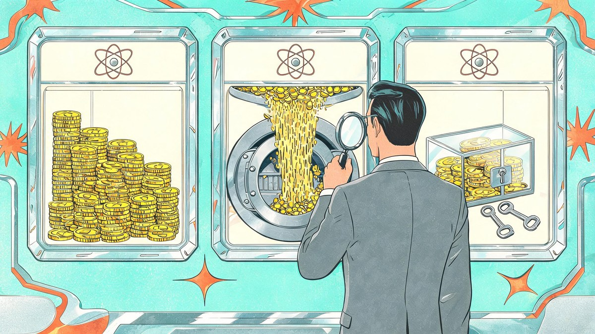
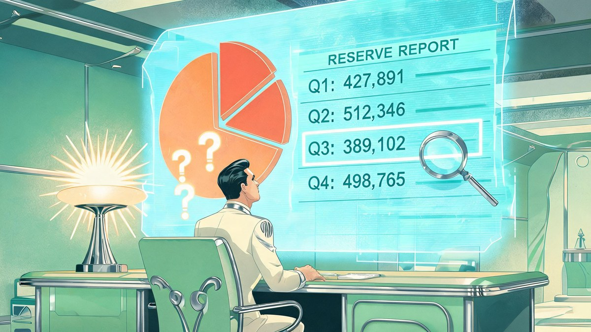
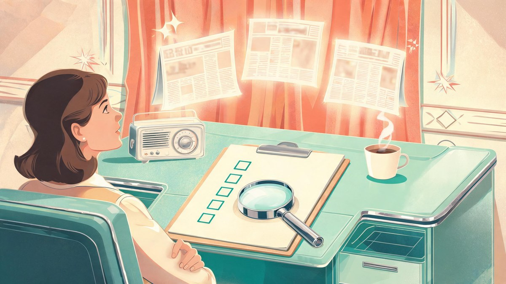

How to Choose Crypto News Coverage of Exchange Solvency
Quick answer
Trust crypto news that shows its evidence: the legal entity, the assets and liabilities examined, the report date and the engagement type. Withdrawals processing proves payments work — not solvency. A pause proves a problem exists — not insolvency. Demand inspection, not adjectives.
In this guide
- Solvency, liquidity and custody are different questions
- Prefer evidence you can inspect over claims you can only repeat
- Read proof-of-reserves coverage for what it leaves out
- Identify the entity that actually owes customers money
- Choose news with a traceable reporting process
- Test the reporting against a simple reserve example
- Use a five-question screen before trusting the headline
- Frequently asked questions
- Keep the evidence ahead of the headline
An exchange can keep processing withdrawals while serious financial problems remain hidden. It can also experience a temporary withdrawal disruption without being insolvent. Choosing useful crypto news coverage means finding reporting that distinguishes those situations rather than treating every wallet transfer, reserve announcement or service outage as a verdict.
The strongest coverage makes its evidence inspectable. It identifies the legal entity involved, separates assets from liabilities and explains what remains unknown. It also distinguishes an exchange’s statements from independently verified findings.
Use the framework below to evaluate an article before relying on its headline. The goal is not to find a publication that always sounds reassuring or skeptical. It is to find one that shows how its conclusions follow from the available evidence.
Key Takeaways
- Solvency, liquidity and custody answer different questions — reporting that mixes them misleads even with accurate facts.
- Withdrawals processing ≠ solvency; a withdrawal pause ≠ insolvency. Both inferences need extra evidence.
- Proof-of-reserves reports are not audits (PCAOB 2023 advisory) — check the denominator: which liabilities were included and excluded.
- The exchange brand is not the debtor — identify the exact legal entity, its jurisdiction and its license scope.
- Five stories citing one anonymous post are still one unverified source.
- Run the five-question screen (claim, evidence, entity+date, scope gaps, what would change the conclusion) before trusting any headline.
Start with the distinction between solvency, liquidity and custody
These three concepts answer different questions. Reporting that mixes them together can mislead readers even when the underlying facts are accurate.
Solvency concerns whether an entity’s assets can cover its obligations. Valuation matters: a large holding of an exchange’s own thinly traded token may be worth much less in a forced sale than its quoted market price suggests.
Liquidity concerns whether obligations can be met when they fall due. Assets might exceed liabilities overall but remain unavailable for immediate withdrawals because they are locked, pledged or difficult to sell. This gap is the core of liquidity risk — the balance-sheet can look healthy while the withdrawal queue tells a different story.
Reliable crypto news explains which of these conditions its evidence actually addresses, rather than using “solvent,” “liquid” and “safe” interchangeably.
Custody concerns how customer assets are held, controlled and legally treated — the practical side of custody arrangements. Assets visible in a wallet do not automatically establish that customers own them, that they are unencumbered or that they would be returned promptly in insolvency proceedings.
A withdrawal backlog therefore raises a liquidity or operational question first. Establishing insolvency requires additional evidence about assets and obligations. Likewise, successful withdrawals show that some payments are being processed, not that every customer claim is fully backed.
Prefer evidence you can inspect over claims you can only repeat
A useful article links to the underlying material and explains its limitations. An exchange statement is evidence of what the company says, not independent confirmation that the statement is complete.
Different sources support different conclusions:
| Evidence | What it can help establish | What it cannot establish alone |
|---|---|---|
| On-chain wallet data | Balances and transfers at identified addresses | Complete liabilities, legal ownership or off-chain obligations |
| Exchange status updates | The company’s account of service availability | Overall financial health or the cause of every disruption |
| Reserve or assurance report | Findings within a stated scope and reporting date | Facts outside that scope or continuing financial health |
| Audited financial statements | Financial position and results under a reporting framework, subject to the audit opinion | A guarantee against fraud, future losses or withdrawal problems |
| Court or regulatory filing | Statements, allegations, orders or findings within a legal process | That every allegation is proven or that conditions remain unchanged |
When comparing crypto news articles, check whether their strongest claim rests on the strongest available evidence or merely on a quotation repeated across multiple websites.
Five stories based on one anonymous social post are still one unverified source. Independent corroboration requires a separate evidentiary basis, such as another directly informed source, a document or observable data.
For US federal court matters, reporters can locate records through PACER. Good coverage identifies the filing, its date and its procedural status. A creditor’s allegation and a judge’s finding should never be presented as equivalent.

Read proof-of-reserves coverage for what it leaves out
Proof of reserves can provide useful information, but the label does not describe one uniform procedure. Coverage should explain exactly what was checked, by whom and at what point in time.
A wallet balance can demonstrate that assets were present at an address. A cryptographic inclusion mechanism may let customers check that their balances appear in a reported dataset. Neither, by itself, establishes that the dataset includes every liability or that the assets are free of competing claims.
The PCAOB’s 2023 investor advisory on proof-of-reserves reports cautions that these reports are not audits and may not address important questions about liabilities, customer rights or borrowed assets.
Strong crypto news coverage should therefore examine the denominator as closely as the reserves: which customer liabilities and other obligations were included, and which were excluded?
Also check whether the report addresses pledged assets, related-party arrangements and the period immediately around the snapshot. Assets available briefly on a measurement date do not necessarily demonstrate continuing availability.
The terminology matters. An audit, a limited assurance engagement and an agreed-upon procedures report involve different work and conclusions. An article should identify the actual engagement rather than upgrading every outside accountant’s involvement into “audited reserves.”
Even a carefully prepared report becomes less informative as circumstances change. Its reporting date belongs near the claim, not buried below it.
Identify the entity that actually owes customers money
An exchange brand may encompass several companies operating under different licenses and contractual arrangements. A report about one subsidiary does not automatically describe the financial position of every company using the brand.
Look for coverage that identifies the entity named in customer terms, the entity covered by financial reporting and the jurisdiction relevant to the issue. If those do not match, the article should explain the gap.
Consolidated group statements can be informative without resolving whether a particular customer-facing entity has access to the group’s assets. Similarly, assets held by an affiliate may not be available to satisfy another company’s obligations.
Licensing also needs careful treatment. Registration or authorization establishes a particular regulatory status, not a universal guarantee of solvency, deposit protection or customer recovery.
Useful crypto news connects these legal details to the claim being assessed: whose assets were examined, whose liabilities were counted and which customers the conclusion actually covers.
Coverage should also distinguish contractual asset segregation from demonstrated operational practice. Customer terms may promise separation, but assessing whether assets were actually kept separate requires further evidence. The legal consequences of any shortfall depend on the applicable law and facts.
How to choose crypto news with a traceable reporting process
A credible article should let you reconstruct the sequence of events without guessing. Check the time of the underlying event, the time of publication and the time of any substantive update. Those are three different timestamps.
If withdrawals paused overnight and resumed before publication, a headline implying a continuing shutdown is misleading. If a reserve report describes balances from months earlier, publishing it today does not make the data current.
Look for attribution, responses and visible corrections
Anonymous sourcing can be justified, particularly where employees or counterparties face retaliation. The article should still explain, as far as source protection allows, how the person knows the information and whether documents or additional sources support it.
The exchange should have a reasonable opportunity to respond to significant allegations. Its response should be assessed against the evidence, not treated as either automatic exoneration or automatic deception.
Prefer crypto news outlets that distinguish confirmed facts, attributed claims and the reporter’s analysis throughout the story, including in the headline and social preview.
Also inspect the publication’s ownership, sponsorship and referral disclosures. Commercial relationships do not automatically invalidate reporting, but undisclosed incentives make it harder to assess editorial independence. Veritya Daily’s guide to common warning signs in crypto reporting provides a broader screening framework.
Corrections matter because exchange stories change quickly. A visible correction explains what was wrong and what changed. Quietly replacing an inaccurate claim without acknowledging it leaves readers unable to assess earlier versions.
Test the reporting against a simple reserve example
Consider a fictional exchange that announces $1.2 billion in reserve assets against $1 billion in reported customer balances. The headline says customer funds are “120% backed.”
That ratio may be arithmetically correct while leaving the central solvency question unresolved. Suppose the report does not establish whether other customer obligations were omitted, whether some assets were pledged or whether the entity has substantial additional debts.
Those unknowns do not prove a shortfall. They mean the disclosed ratio is insufficient to rule one out.
A responsible article would state what the report establishes, identify the excluded questions and seek evidence addressing them. It would not subtract hypothetical liabilities as though they were confirmed facts. It would also examine asset composition: cash and readily saleable assets have different liquidity characteristics from concentrated holdings in a thinly traded token.
The better crypto news article is not necessarily the one with the most dramatic conclusion. It is the one that prevents a narrow reserve calculation from becoming an unsupported claim about the whole business.
Apply the same discipline to adverse evidence. A large transfer out of a labeled wallet could reflect custody reorganization, collateral movement or withdrawals. The transaction is observable; its purpose may remain unverified.

Use a five-question screen before trusting the headline
You do not need to reproduce a forensic accounting investigation to identify weak coverage. Before sharing an article or using it to inform a decision, ask:
- What is the exact claim? Identify whether the story concerns solvency, liquidity, custody or an operational interruption.
- What is the underlying evidence? Look for accessible documents, attributable statements or reproducible observations.
- Which entity and date does it cover? Match the evidence to the business and period discussed in the headline.
- What remains outside the scope? Check for missing liabilities, ownership questions, encumbrances and valuation limits.
- What would change the conclusion? Look for specific unresolved questions rather than vague reassurance or alarm.

Treat this as a screening tool, not a certification. An article can pass these checks and still lack enough public information to establish financial health.
Price action is not a substitute for that information. An exchange token falling sharply or assets trading at a discount can indicate concern without proving insolvency. Our explanation of why crypto prices move suddenly covers market mechanisms that can complicate those signals.
The most useful crypto news may conclude that the evidence is incomplete. That is a stronger result than presenting an uncertain situation as settled merely to produce a decisive headline.
Frequently asked questions
Can proof of reserves establish that an exchange is solvent?
Not by itself. Its value depends on the procedures performed, the assets and liabilities included, ownership and encumbrances. A reserve snapshot should not be treated as a complete financial assessment.
Do paused withdrawals mean an exchange is insolvent?
No. A pause can result from operational, security, compliance or liquidity problems. It warrants investigation, but determining insolvency requires evidence about assets and obligations. A company’s stated explanation also needs verification.
Does an audit guarantee customer funds are safe?
No. A financial statement audit provides reasonable assurance within its scope, not an absolute guarantee. Read the opinion, reporting period, entity coverage and relevant disclosures. It does not guarantee future access to funds.
How should I interpret conflicting reports?
Compare their underlying evidence and timestamps before comparing their conclusions. One article may describe an older snapshot, a different subsidiary or an allegation rather than an established finding. Agreement among headlines is less useful than agreement among independent sources.
What if no publication can establish the exchange’s financial position?
Treat that as an information gap, not proof of either health or failure. Sound crypto news makes the missing evidence explicit and updates its assessment when verifiable information emerges.
Keep the evidence ahead of the headline
Choose coverage that shows its documents, defines its scope and leaves uncertainty visible. No publication can guarantee an exchange’s solvency, and this framework is not financial advice.
For ongoing reporting across cryptocurrency, finance and cybersecurity, explore Veritya Daily or subscribe to its free daily email briefing. Apply the same evidence standards to every outlet you read.
📚 Sources & Citations (4)
- PCAOB — PCAOB standards & 2023 investor advisory on proof-of-reserves reports (accessed Oct 2026)
- PACER — Public Access to Court Electronic Records: US federal court filings (accessed Oct 2026)
- Veritya Daily — Common Warning Signs in Crypto Reporting (2026)
- Veritya Daily — Why Crypto Prices Move Suddenly (And How to Investigate) (2026)